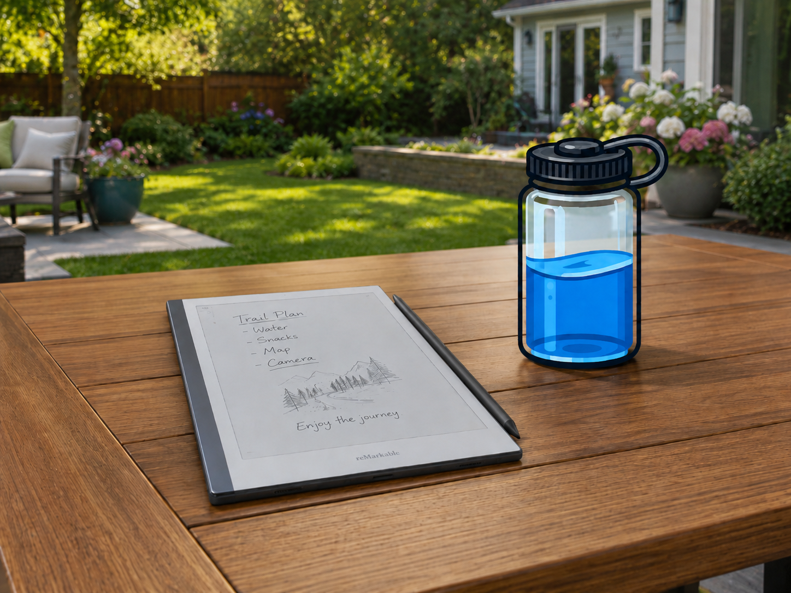
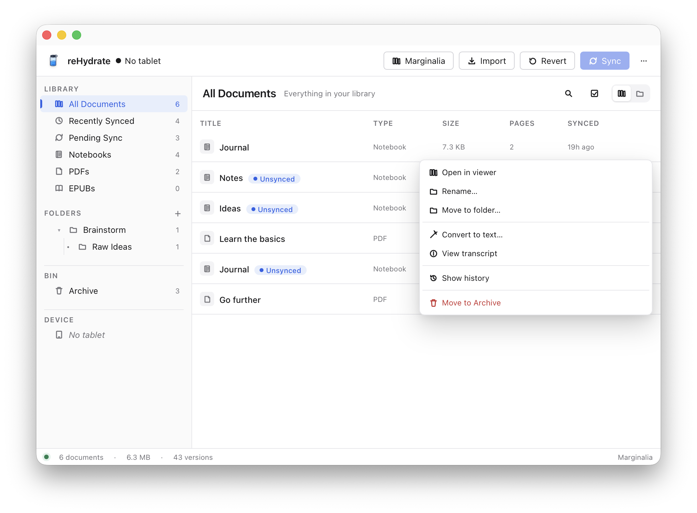

Trail plans on Sunday. Meeting notes on Tuesday. A sketch you'll
want to remember on Thursday. The reMarkable is the right place
for all of it — paper-like, distraction-free, always on.
But at the end of the week, every note still lives on the tablet.

reHydrate brings them back.
Plug the tablet into your computer with the cable it came with.
Open reHydrate, push Sync, and every notebook,
every PDF, every sketch flows into a library on your machine.
No reMarkable Connect. No monthly fee. No Wi-Fi handshake. Just
a USB cable and one button.
A library that belongs to you.
Search across every notebook. Organise them into folders. Open
any document as a sharp PDF — pens, fineliners, markers, and
highlighters all rendered crisply, ready to print or share.
Every sync keeps a snapshot. Decided you preferred last week's
draft? Open the history view and restore it.
And it reads your handwriting.
Point reHydrate at an Ollama
daemon on your machine and a vision-language model turns
handwritten notebooks into Markdown. Your scrawl, searchable.
Ollama runs on your computer, not in a cloud somewhere.
Pick the model that fits your hardware — a 4B model fits
comfortably on 8 GB of RAM; bigger models do better on
cursive and equations. Your pages never leave the network
you're sitting on.

Right-click any notebook → Convert to text… The
transcript attaches to the document so the next time you open
it, the text is already there.
Privacy by construction
The whole point of reHydrate is that your notes never leave your
computer. Concretely:
No telemetry, no analytics, no "anonymous usage statistics".
The app makes no network calls on launch.
Sync between your tablet and your computer happens entirely
over the USB cable. The reMarkable's cloud is not in the loop.
Your tablet password is stored in your computer's secure
password store (Keychain on macOS, the equivalent on Linux
and Windows). Never in plain text on disk.
OCR runs on a daemon you control. If you point reHydrate at
a remote Ollama, the URL is locked to that host — no redirects,
no leakage to other endpoints.
An automated check runs on every release to make sure nobody
accidentally adds a network call somewhere they shouldn't.
What it's not
It's not a cloud service. There's nothing to subscribe to.
It doesn't replace your reMarkable's tablet experience — it
sits next to it, on your computer.
It's not yet officially signed for macOS or Windows, so the
first launch needs an extra confirmation step (right-click →
Open on macOS, "Run anyway" on Windows). Signing is on the
roadmap.
It's tested against reMarkable 2 on firmware 3.x. The Paper
Pro and the original reMarkable 1 aren't supported yet.
Get it
Pre-built apps are on the
releases page
for Mac (Apple Silicon and Intel), Linux (AppImage and .deb), and
Windows. Pick your platform from the buttons at the top, or browse
the full list.
Want to build it yourself?
git clone https://github.com/dm807cam/rehydrate
cd rehydrate
./build.sh